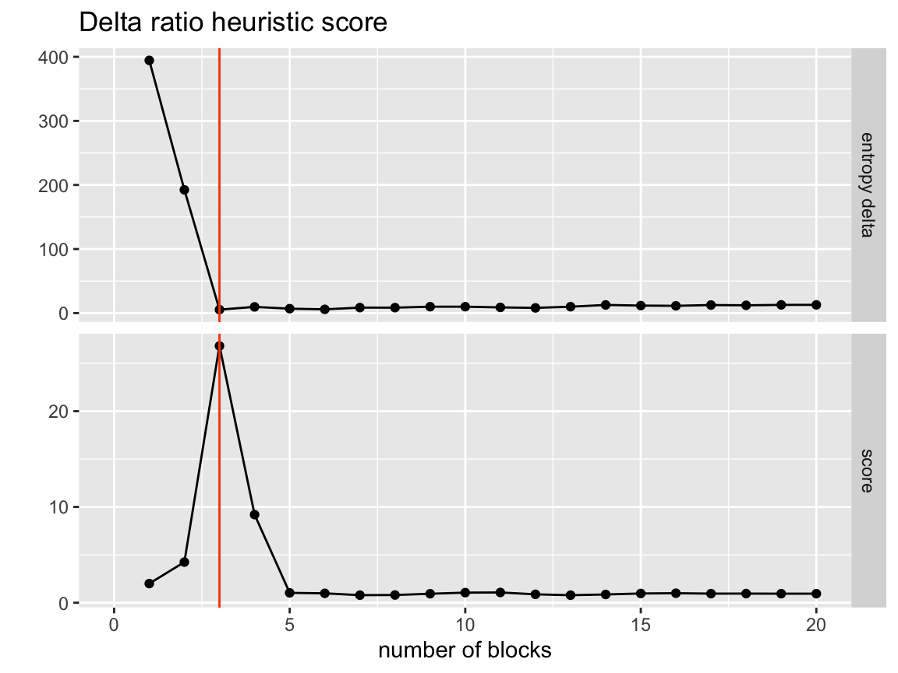
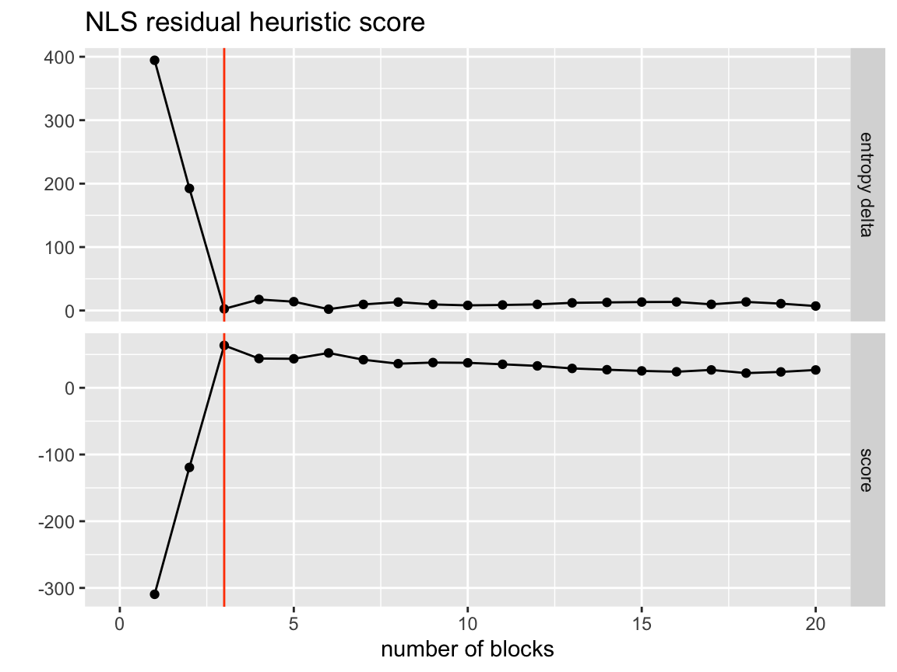
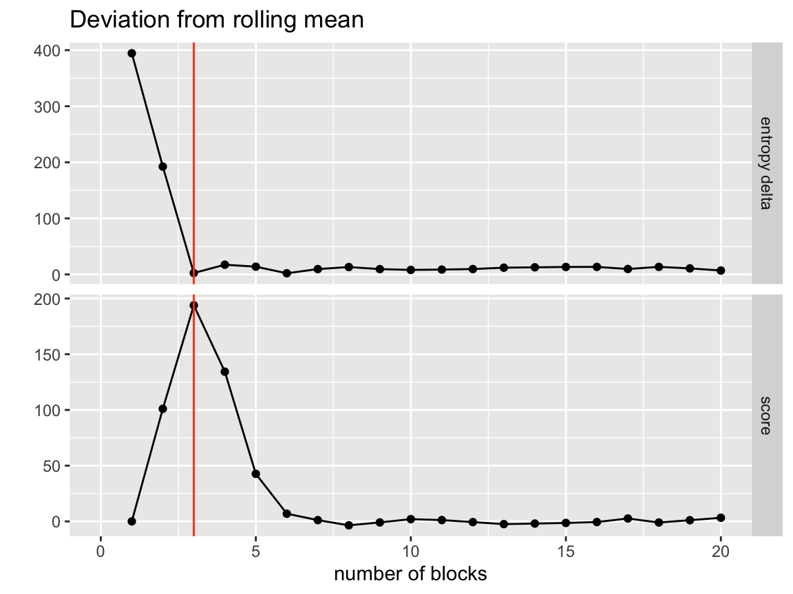
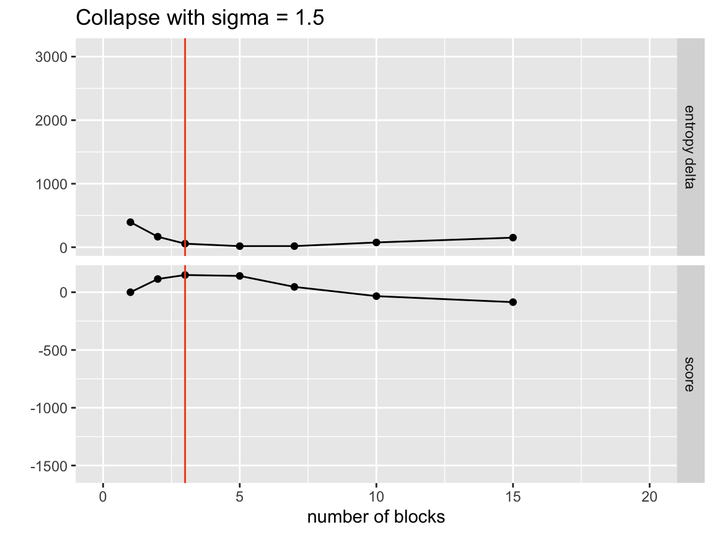
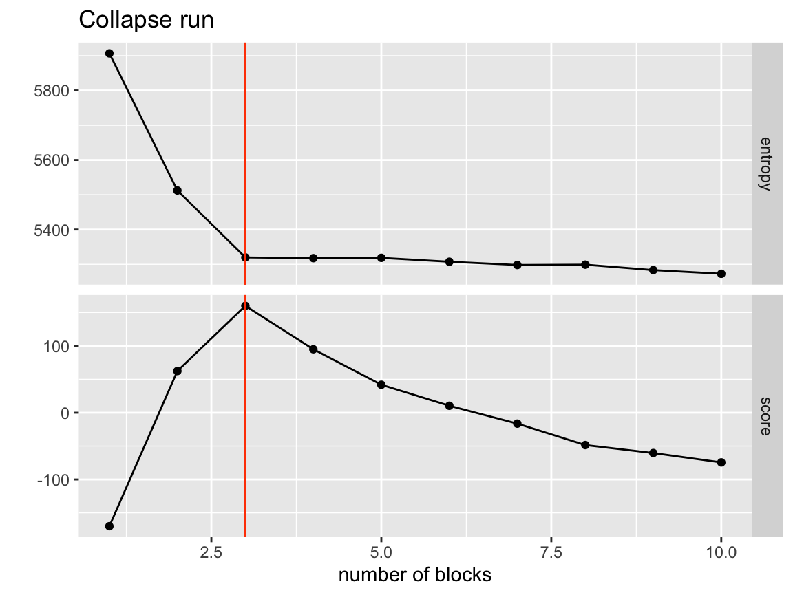

One technique of finding the optimal number of clusters/ best partitioning is using the efficient agglomerative merging algorithm. This is typically used to find the initial state for MCMC chains but can stand on its own as a clustering method.
Agglomerative merging can be acomplished with the SBM class using the functions collapse_blocks() and collapse_runs(). collapse_blocks() runs a single agglomerative merge step from one group per node all the way down to your desired number of groups and collapse_runs() repeats this process for a range of groups.
Before we look at using both we need to setup some data to cluster.
Setup
First we load the sbmr package along with the tidyverse package.
Data
The data we are using will come from the included simulation function, sim_basic_block_network().
set.seed(42) # seed for reproducability
n_blocks <- 3 # Four total groups
group_size <- 40 # W/ 50 nodes in each
network <- sim_basic_block_network(
n_blocks = n_blocks,
n_nodes_per_block = group_size,
return_edge_propensities = TRUE,
random_seed = 42 # This is the internal model seed (not same as set.seed())
)We can investigate the simulated network’s true block structure by visualizing the edge propensities between the groups.
network$edge_propensities %>%
ggplot(aes(x = block_1, y = block_2)) +
geom_tile(aes(fill = propensity))
We can also visualise the simulated data directly using the visualize_network() function.
visualize_network(network)Single merge run
First we will demonstrate agglomerative merging using the single merge step function: collapse_blocks().
There are a few important input parameters we need to consider:
-
sigma: Controls the rate of collapse. At each step of the collapsing the model will try and removecurrent_num_nodes(1 - 1/sigma)nodes from the model. So a larger sigma means a faster collapse rate. -
desired_n_blocks: How many groups should this given merge drop down to. If the network has more than one node type this number is multiplied by the total number of types. -
report_all_steps: Should the model state be provided for every merge step or just the final one? If collapsing is being used to infer hierarcichal structure in data or inspection is desired this should be set toTRUE, otherwise it will slow down collapsing due to increased data transfer. -
greedy: Should every possible group merger be considered? IfFALSE, candidates for mergers are drawn by similarity in edges (just as MCMC move proposals are). This may lead the model to local minimums by always pursuing best possible merges. -
num_block_proposals: Ifgreedy = FALSE, this parameter controls how many merger proposals are drawn for each group in the model. A larger number will increase the exploration of merge potentials but may lead the model to local minimums for the same reason greedy mode does. -
num_mcmc_sweeps: How many MCMC sweeps the model does at each agglomerative merge step. This allows the model to allow nodes to find their most natural resting place in a given collapsed state. Larger values will slow down runtime but can potentially lead for more stable results.
Performing a single merge with 1 group per merge
To perform the complete merge we put our sigma < 1 and our num_mcmc_sweeps = 0. In addition we return all the steps so we can look at the progress of the model as it collapses.
network <- network %>%
collapse_blocks(sigma = 0.9, report_all_steps = TRUE)
network %>%
get_collapse_results() %>%
head()
#> n_blocks entropy_delta entropy merges
#> 1 119 12.97978 3541.393 1, 2
#> 2 118 14.52065 3555.913 1, 2
#> 3 117 13.13379 3569.047 1, 2
#> 4 116 15.23474 3584.282 1, 2
#> 5 115 15.53421 3599.816 1, 2
#> 6 114 15.84546 3615.661 1, 2
#> state
#> 1 g1_1, g1_2, g1_3, g1_4, g1_5, g1_6, g1_7, g1_8, g1_9, g1_10, g1_11, g1_12, g1_13, g1_14, g1_15, g1_16, g1_17, g1_18, g1_19, g1_20, g1_21, g1_22, g1_23, g1_24, g1_25, g1_26, g1_27, g1_28, g1_29, g1_30, g1_31, g1_32, g1_33, g1_34, g1_35, g1_36, g1_37, g1_38, g1_39, g1_40, g2_1, g2_2, g2_3, g2_4, g2_5, g2_6, g2_7, g2_8, g2_9, g2_10, g2_11, g2_12, g2_13, g2_14, g2_15, g2_16, g2_17, g2_18, g2_19, g2_20, g2_21, g2_22, g2_23, g2_24, g2_25, g2_26, g2_27, g2_28, g2_29, g2_30, g2_31, g2_32, g2_33, g2_34, g2_35, g2_36, g2_37, g2_38, g2_39, g2_40, g3_1, g3_2, g3_3, g3_4, g3_5, g3_6, g3_7, g3_8, g3_9, g3_10, g3_11, g3_12, g3_13, g3_14, g3_15, g3_16, g3_17, g3_18, g3_19, g3_20, g3_21, g3_22, g3_23, g3_24, g3_25, g3_26, g3_27, g3_28, g3_29, g3_30, g3_31, g3_32, g3_33, g3_34, g3_35, g3_36, g3_37, g3_38, g3_39, g3_40, node, node, node, node, node, node, node, node, node, node, node, node, node, node, node, node, node, node, node, node, node, node, node, node, node, node, node, node, node, node, node, node, node, node, node, node, node, node, node, node, node, node, node, node, node, node, node, node, node, node, node, node, node, node, node, node, node, node, node, node, node, node, node, node, node, node, node, node, node, node, node, node, node, node, node, node, node, node, node, node, node, node, node, node, node, node, node, node, node, node, node, node, node, node, node, node, node, node, node, node, node, node, node, node, node, node, node, node, node, node, node, node, node, node, node, node, node, node, node, node, bl_node_0, bl_node_1, bl_node_2, bl_node_3, bl_node_4, bl_node_5, bl_node_6, bl_node_7, bl_node_8, bl_node_9, bl_node_10, bl_node_11, bl_node_5, bl_node_13, bl_node_14, bl_node_15, bl_node_16, bl_node_17, bl_node_18, bl_node_19, bl_node_20, bl_node_21, bl_node_22, bl_node_23, bl_node_24, bl_node_25, bl_node_26, bl_node_27, bl_node_28, bl_node_29, bl_node_30, bl_node_31, bl_node_32, bl_node_33, bl_node_34, bl_node_35, bl_node_36, bl_node_37, bl_node_38, bl_node_39, bl_node_40, bl_node_41, bl_node_42, bl_node_43, bl_node_44, bl_node_45, bl_node_46, bl_node_47, bl_node_48, bl_node_49, bl_node_50, bl_node_51, bl_node_52, bl_node_53, bl_node_54, bl_node_55, bl_node_56, bl_node_57, bl_node_58, bl_node_59, bl_node_60, bl_node_61, bl_node_62, bl_node_63, bl_node_64, bl_node_65, bl_node_66, bl_node_67, bl_node_68, bl_node_69, bl_node_70, bl_node_71, bl_node_72, bl_node_73, bl_node_74, bl_node_75, bl_node_76, bl_node_77, bl_node_78, bl_node_79, bl_node_80, bl_node_81, bl_node_82, bl_node_83, bl_node_84, bl_node_85, bl_node_86, bl_node_87, bl_node_88, bl_node_89, bl_node_90, bl_node_91, bl_node_92, bl_node_93, bl_node_94, bl_node_95, bl_node_96, bl_node_97, bl_node_98, bl_node_99, bl_node_100, bl_node_101, bl_node_102, bl_node_103, bl_node_104, bl_node_105, bl_node_106, bl_node_107, bl_node_108, bl_node_109, bl_node_110, bl_node_111, bl_node_112, bl_node_113, bl_node_114, bl_node_115, bl_node_116, bl_node_117, bl_node_118, bl_node_119, 0, 0, 0, 0, 0, 0, 0, 0, 0, 0, 0, 0, 0, 0, 0, 0, 0, 0, 0, 0, 0, 0, 0, 0, 0, 0, 0, 0, 0, 0, 0, 0, 0, 0, 0, 0, 0, 0, 0, 0, 0, 0, 0, 0, 0, 0, 0, 0, 0, 0, 0, 0, 0, 0, 0, 0, 0, 0, 0, 0, 0, 0, 0, 0, 0, 0, 0, 0, 0, 0, 0, 0, 0, 0, 0, 0, 0, 0, 0, 0, 0, 0, 0, 0, 0, 0, 0, 0, 0, 0, 0, 0, 0, 0, 0, 0, 0, 0, 0, 0, 0, 0, 0, 0, 0, 0, 0, 0, 0, 0, 0, 0, 0, 0, 0, 0, 0, 0, 0, 0
#> 2 g1_1, g1_2, g1_3, g1_4, g1_5, g1_6, g1_7, g1_8, g1_9, g1_10, g1_11, g1_12, g1_13, g1_14, g1_15, g1_16, g1_17, g1_18, g1_19, g1_20, g1_21, g1_22, g1_23, g1_24, g1_25, g1_26, g1_27, g1_28, g1_29, g1_30, g1_31, g1_32, g1_33, g1_34, g1_35, g1_36, g1_37, g1_38, g1_39, g1_40, g2_1, g2_2, g2_3, g2_4, g2_5, g2_6, g2_7, g2_8, g2_9, g2_10, g2_11, g2_12, g2_13, g2_14, g2_15, g2_16, g2_17, g2_18, g2_19, g2_20, g2_21, g2_22, g2_23, g2_24, g2_25, g2_26, g2_27, g2_28, g2_29, g2_30, g2_31, g2_32, g2_33, g2_34, g2_35, g2_36, g2_37, g2_38, g2_39, g2_40, g3_1, g3_2, g3_3, g3_4, g3_5, g3_6, g3_7, g3_8, g3_9, g3_10, g3_11, g3_12, g3_13, g3_14, g3_15, g3_16, g3_17, g3_18, g3_19, g3_20, g3_21, g3_22, g3_23, g3_24, g3_25, g3_26, g3_27, g3_28, g3_29, g3_30, g3_31, g3_32, g3_33, g3_34, g3_35, g3_36, g3_37, g3_38, g3_39, g3_40, node, node, node, node, node, node, node, node, node, node, node, node, node, node, node, node, node, node, node, node, node, node, node, node, node, node, node, node, node, node, node, node, node, node, node, node, node, node, node, node, node, node, node, node, node, node, node, node, node, node, node, node, node, node, node, node, node, node, node, node, node, node, node, node, node, node, node, node, node, node, node, node, node, node, node, node, node, node, node, node, node, node, node, node, node, node, node, node, node, node, node, node, node, node, node, node, node, node, node, node, node, node, node, node, node, node, node, node, node, node, node, node, node, node, node, node, node, node, node, node, bl_node_0, bl_node_1, bl_node_2, bl_node_3, bl_node_4, bl_node_5, bl_node_6, bl_node_7, bl_node_8, bl_node_9, bl_node_10, bl_node_11, bl_node_5, bl_node_13, bl_node_14, bl_node_15, bl_node_16, bl_node_17, bl_node_18, bl_node_19, bl_node_15, bl_node_21, bl_node_22, bl_node_23, bl_node_24, bl_node_25, bl_node_26, bl_node_27, bl_node_28, bl_node_29, bl_node_30, bl_node_31, bl_node_32, bl_node_33, bl_node_34, bl_node_35, bl_node_36, bl_node_37, bl_node_38, bl_node_39, bl_node_40, bl_node_41, bl_node_42, bl_node_43, bl_node_44, bl_node_45, bl_node_46, bl_node_47, bl_node_48, bl_node_49, bl_node_50, bl_node_51, bl_node_52, bl_node_53, bl_node_54, bl_node_55, bl_node_56, bl_node_57, bl_node_58, bl_node_59, bl_node_60, bl_node_61, bl_node_62, bl_node_63, bl_node_64, bl_node_65, bl_node_66, bl_node_67, bl_node_68, bl_node_69, bl_node_70, bl_node_71, bl_node_72, bl_node_73, bl_node_74, bl_node_75, bl_node_76, bl_node_77, bl_node_78, bl_node_79, bl_node_80, bl_node_81, bl_node_82, bl_node_83, bl_node_84, bl_node_85, bl_node_86, bl_node_87, bl_node_88, bl_node_89, bl_node_90, bl_node_91, bl_node_92, bl_node_93, bl_node_94, bl_node_95, bl_node_96, bl_node_97, bl_node_98, bl_node_99, bl_node_100, bl_node_101, bl_node_102, bl_node_103, bl_node_104, bl_node_105, bl_node_106, bl_node_107, bl_node_108, bl_node_109, bl_node_110, bl_node_111, bl_node_112, bl_node_113, bl_node_114, bl_node_115, bl_node_116, bl_node_117, bl_node_118, bl_node_119, 0, 0, 0, 0, 0, 0, 0, 0, 0, 0, 0, 0, 0, 0, 0, 0, 0, 0, 0, 0, 0, 0, 0, 0, 0, 0, 0, 0, 0, 0, 0, 0, 0, 0, 0, 0, 0, 0, 0, 0, 0, 0, 0, 0, 0, 0, 0, 0, 0, 0, 0, 0, 0, 0, 0, 0, 0, 0, 0, 0, 0, 0, 0, 0, 0, 0, 0, 0, 0, 0, 0, 0, 0, 0, 0, 0, 0, 0, 0, 0, 0, 0, 0, 0, 0, 0, 0, 0, 0, 0, 0, 0, 0, 0, 0, 0, 0, 0, 0, 0, 0, 0, 0, 0, 0, 0, 0, 0, 0, 0, 0, 0, 0, 0, 0, 0, 0, 0, 0, 0
#> 3 g1_1, g1_2, g1_3, g1_4, g1_5, g1_6, g1_7, g1_8, g1_9, g1_10, g1_11, g1_12, g1_13, g1_14, g1_15, g1_16, g1_17, g1_18, g1_19, g1_20, g1_21, g1_22, g1_23, g1_24, g1_25, g1_26, g1_27, g1_28, g1_29, g1_30, g1_31, g1_32, g1_33, g1_34, g1_35, g1_36, g1_37, g1_38, g1_39, g1_40, g2_1, g2_2, g2_3, g2_4, g2_5, g2_6, g2_7, g2_8, g2_9, g2_10, g2_11, g2_12, g2_13, g2_14, g2_15, g2_16, g2_17, g2_18, g2_19, g2_20, g2_21, g2_22, g2_23, g2_24, g2_25, g2_26, g2_27, g2_28, g2_29, g2_30, g2_31, g2_32, g2_33, g2_34, g2_35, g2_36, g2_37, g2_38, g2_39, g2_40, g3_1, g3_2, g3_3, g3_4, g3_5, g3_6, g3_7, g3_8, g3_9, g3_10, g3_11, g3_12, g3_13, g3_14, g3_15, g3_16, g3_17, g3_18, g3_19, g3_20, g3_21, g3_22, g3_23, g3_24, g3_25, g3_26, g3_27, g3_28, g3_29, g3_30, g3_31, g3_32, g3_33, g3_34, g3_35, g3_36, g3_37, g3_38, g3_39, g3_40, node, node, node, node, node, node, node, node, node, node, node, node, node, node, node, node, node, node, node, node, node, node, node, node, node, node, node, node, node, node, node, node, node, node, node, node, node, node, node, node, node, node, node, node, node, node, node, node, node, node, node, node, node, node, node, node, node, node, node, node, node, node, node, node, node, node, node, node, node, node, node, node, node, node, node, node, node, node, node, node, node, node, node, node, node, node, node, node, node, node, node, node, node, node, node, node, node, node, node, node, node, node, node, node, node, node, node, node, node, node, node, node, node, node, node, node, node, node, node, node, bl_node_0, bl_node_1, bl_node_2, bl_node_3, bl_node_4, bl_node_5, bl_node_6, bl_node_7, bl_node_8, bl_node_9, bl_node_10, bl_node_11, bl_node_5, bl_node_13, bl_node_14, bl_node_15, bl_node_16, bl_node_17, bl_node_18, bl_node_19, bl_node_15, bl_node_21, bl_node_22, bl_node_23, bl_node_24, bl_node_25, bl_node_26, bl_node_27, bl_node_28, bl_node_29, bl_node_30, bl_node_31, bl_node_32, bl_node_33, bl_node_34, bl_node_38, bl_node_36, bl_node_37, bl_node_38, bl_node_39, bl_node_40, bl_node_41, bl_node_42, bl_node_43, bl_node_44, bl_node_45, bl_node_46, bl_node_47, bl_node_48, bl_node_49, bl_node_50, bl_node_51, bl_node_52, bl_node_53, bl_node_54, bl_node_55, bl_node_56, bl_node_57, bl_node_58, bl_node_59, bl_node_60, bl_node_61, bl_node_62, bl_node_63, bl_node_64, bl_node_65, bl_node_66, bl_node_67, bl_node_68, bl_node_69, bl_node_70, bl_node_71, bl_node_72, bl_node_73, bl_node_74, bl_node_75, bl_node_76, bl_node_77, bl_node_78, bl_node_79, bl_node_80, bl_node_81, bl_node_82, bl_node_83, bl_node_84, bl_node_85, bl_node_86, bl_node_87, bl_node_88, bl_node_89, bl_node_90, bl_node_91, bl_node_92, bl_node_93, bl_node_94, bl_node_95, bl_node_96, bl_node_97, bl_node_98, bl_node_99, bl_node_100, bl_node_101, bl_node_102, bl_node_103, bl_node_104, bl_node_105, bl_node_106, bl_node_107, bl_node_108, bl_node_109, bl_node_110, bl_node_111, bl_node_112, bl_node_113, bl_node_114, bl_node_115, bl_node_116, bl_node_117, bl_node_118, bl_node_119, 0, 0, 0, 0, 0, 0, 0, 0, 0, 0, 0, 0, 0, 0, 0, 0, 0, 0, 0, 0, 0, 0, 0, 0, 0, 0, 0, 0, 0, 0, 0, 0, 0, 0, 0, 0, 0, 0, 0, 0, 0, 0, 0, 0, 0, 0, 0, 0, 0, 0, 0, 0, 0, 0, 0, 0, 0, 0, 0, 0, 0, 0, 0, 0, 0, 0, 0, 0, 0, 0, 0, 0, 0, 0, 0, 0, 0, 0, 0, 0, 0, 0, 0, 0, 0, 0, 0, 0, 0, 0, 0, 0, 0, 0, 0, 0, 0, 0, 0, 0, 0, 0, 0, 0, 0, 0, 0, 0, 0, 0, 0, 0, 0, 0, 0, 0, 0, 0, 0, 0
#> 4 g1_1, g1_2, g1_3, g1_4, g1_5, g1_6, g1_7, g1_8, g1_9, g1_10, g1_11, g1_12, g1_13, g1_14, g1_15, g1_16, g1_17, g1_18, g1_19, g1_20, g1_21, g1_22, g1_23, g1_24, g1_25, g1_26, g1_27, g1_28, g1_29, g1_30, g1_31, g1_32, g1_33, g1_34, g1_35, g1_36, g1_37, g1_38, g1_39, g1_40, g2_1, g2_2, g2_3, g2_4, g2_5, g2_6, g2_7, g2_8, g2_9, g2_10, g2_11, g2_12, g2_13, g2_14, g2_15, g2_16, g2_17, g2_18, g2_19, g2_20, g2_21, g2_22, g2_23, g2_24, g2_25, g2_26, g2_27, g2_28, g2_29, g2_30, g2_31, g2_32, g2_33, g2_34, g2_35, g2_36, g2_37, g2_38, g2_39, g2_40, g3_1, g3_2, g3_3, g3_4, g3_5, g3_6, g3_7, g3_8, g3_9, g3_10, g3_11, g3_12, g3_13, g3_14, g3_15, g3_16, g3_17, g3_18, g3_19, g3_20, g3_21, g3_22, g3_23, g3_24, g3_25, g3_26, g3_27, g3_28, g3_29, g3_30, g3_31, g3_32, g3_33, g3_34, g3_35, g3_36, g3_37, g3_38, g3_39, g3_40, node, node, node, node, node, node, node, node, node, node, node, node, node, node, node, node, node, node, node, node, node, node, node, node, node, node, node, node, node, node, node, node, node, node, node, node, node, node, node, node, node, node, node, node, node, node, node, node, node, node, node, node, node, node, node, node, node, node, node, node, node, node, node, node, node, node, node, node, node, node, node, node, node, node, node, node, node, node, node, node, node, node, node, node, node, node, node, node, node, node, node, node, node, node, node, node, node, node, node, node, node, node, node, node, node, node, node, node, node, node, node, node, node, node, node, node, node, node, node, node, bl_node_0, bl_node_1, bl_node_2, bl_node_3, bl_node_4, bl_node_5, bl_node_6, bl_node_7, bl_node_8, bl_node_9, bl_node_10, bl_node_11, bl_node_5, bl_node_13, bl_node_14, bl_node_15, bl_node_16, bl_node_17, bl_node_18, bl_node_19, bl_node_15, bl_node_21, bl_node_22, bl_node_23, bl_node_24, bl_node_25, bl_node_26, bl_node_27, bl_node_28, bl_node_29, bl_node_30, bl_node_31, bl_node_32, bl_node_33, bl_node_34, bl_node_38, bl_node_22, bl_node_37, bl_node_38, bl_node_39, bl_node_40, bl_node_41, bl_node_42, bl_node_43, bl_node_44, bl_node_45, bl_node_46, bl_node_47, bl_node_48, bl_node_49, bl_node_50, bl_node_51, bl_node_52, bl_node_53, bl_node_54, bl_node_55, bl_node_56, bl_node_57, bl_node_58, bl_node_59, bl_node_60, bl_node_61, bl_node_62, bl_node_63, bl_node_64, bl_node_65, bl_node_66, bl_node_67, bl_node_68, bl_node_69, bl_node_70, bl_node_71, bl_node_72, bl_node_73, bl_node_74, bl_node_75, bl_node_76, bl_node_77, bl_node_78, bl_node_79, bl_node_80, bl_node_81, bl_node_82, bl_node_83, bl_node_84, bl_node_85, bl_node_86, bl_node_87, bl_node_88, bl_node_89, bl_node_90, bl_node_91, bl_node_92, bl_node_93, bl_node_94, bl_node_95, bl_node_96, bl_node_97, bl_node_98, bl_node_99, bl_node_100, bl_node_101, bl_node_102, bl_node_103, bl_node_104, bl_node_105, bl_node_106, bl_node_107, bl_node_108, bl_node_109, bl_node_110, bl_node_111, bl_node_112, bl_node_113, bl_node_114, bl_node_115, bl_node_116, bl_node_117, bl_node_118, bl_node_119, 0, 0, 0, 0, 0, 0, 0, 0, 0, 0, 0, 0, 0, 0, 0, 0, 0, 0, 0, 0, 0, 0, 0, 0, 0, 0, 0, 0, 0, 0, 0, 0, 0, 0, 0, 0, 0, 0, 0, 0, 0, 0, 0, 0, 0, 0, 0, 0, 0, 0, 0, 0, 0, 0, 0, 0, 0, 0, 0, 0, 0, 0, 0, 0, 0, 0, 0, 0, 0, 0, 0, 0, 0, 0, 0, 0, 0, 0, 0, 0, 0, 0, 0, 0, 0, 0, 0, 0, 0, 0, 0, 0, 0, 0, 0, 0, 0, 0, 0, 0, 0, 0, 0, 0, 0, 0, 0, 0, 0, 0, 0, 0, 0, 0, 0, 0, 0, 0, 0, 0
#> 5 g1_1, g1_2, g1_3, g1_4, g1_5, g1_6, g1_7, g1_8, g1_9, g1_10, g1_11, g1_12, g1_13, g1_14, g1_15, g1_16, g1_17, g1_18, g1_19, g1_20, g1_21, g1_22, g1_23, g1_24, g1_25, g1_26, g1_27, g1_28, g1_29, g1_30, g1_31, g1_32, g1_33, g1_34, g1_35, g1_36, g1_37, g1_38, g1_39, g1_40, g2_1, g2_2, g2_3, g2_4, g2_5, g2_6, g2_7, g2_8, g2_9, g2_10, g2_11, g2_12, g2_13, g2_14, g2_15, g2_16, g2_17, g2_18, g2_19, g2_20, g2_21, g2_22, g2_23, g2_24, g2_25, g2_26, g2_27, g2_28, g2_29, g2_30, g2_31, g2_32, g2_33, g2_34, g2_35, g2_36, g2_37, g2_38, g2_39, g2_40, g3_1, g3_2, g3_3, g3_4, g3_5, g3_6, g3_7, g3_8, g3_9, g3_10, g3_11, g3_12, g3_13, g3_14, g3_15, g3_16, g3_17, g3_18, g3_19, g3_20, g3_21, g3_22, g3_23, g3_24, g3_25, g3_26, g3_27, g3_28, g3_29, g3_30, g3_31, g3_32, g3_33, g3_34, g3_35, g3_36, g3_37, g3_38, g3_39, g3_40, node, node, node, node, node, node, node, node, node, node, node, node, node, node, node, node, node, node, node, node, node, node, node, node, node, node, node, node, node, node, node, node, node, node, node, node, node, node, node, node, node, node, node, node, node, node, node, node, node, node, node, node, node, node, node, node, node, node, node, node, node, node, node, node, node, node, node, node, node, node, node, node, node, node, node, node, node, node, node, node, node, node, node, node, node, node, node, node, node, node, node, node, node, node, node, node, node, node, node, node, node, node, node, node, node, node, node, node, node, node, node, node, node, node, node, node, node, node, node, node, bl_node_0, bl_node_1, bl_node_2, bl_node_3, bl_node_4, bl_node_5, bl_node_6, bl_node_7, bl_node_8, bl_node_9, bl_node_10, bl_node_11, bl_node_5, bl_node_13, bl_node_14, bl_node_15, bl_node_16, bl_node_17, bl_node_18, bl_node_19, bl_node_15, bl_node_21, bl_node_22, bl_node_23, bl_node_24, bl_node_25, bl_node_26, bl_node_27, bl_node_28, bl_node_29, bl_node_30, bl_node_31, bl_node_22, bl_node_33, bl_node_34, bl_node_38, bl_node_22, bl_node_37, bl_node_38, bl_node_39, bl_node_40, bl_node_41, bl_node_42, bl_node_43, bl_node_44, bl_node_45, bl_node_46, bl_node_47, bl_node_48, bl_node_49, bl_node_50, bl_node_51, bl_node_52, bl_node_53, bl_node_54, bl_node_55, bl_node_56, bl_node_57, bl_node_58, bl_node_59, bl_node_60, bl_node_61, bl_node_62, bl_node_63, bl_node_64, bl_node_65, bl_node_66, bl_node_67, bl_node_68, bl_node_69, bl_node_70, bl_node_71, bl_node_72, bl_node_73, bl_node_74, bl_node_75, bl_node_76, bl_node_77, bl_node_78, bl_node_79, bl_node_80, bl_node_81, bl_node_82, bl_node_83, bl_node_84, bl_node_85, bl_node_86, bl_node_87, bl_node_88, bl_node_89, bl_node_90, bl_node_91, bl_node_92, bl_node_93, bl_node_94, bl_node_95, bl_node_96, bl_node_97, bl_node_98, bl_node_99, bl_node_100, bl_node_101, bl_node_102, bl_node_103, bl_node_104, bl_node_105, bl_node_106, bl_node_107, bl_node_108, bl_node_109, bl_node_110, bl_node_111, bl_node_112, bl_node_113, bl_node_114, bl_node_115, bl_node_116, bl_node_117, bl_node_118, bl_node_119, 0, 0, 0, 0, 0, 0, 0, 0, 0, 0, 0, 0, 0, 0, 0, 0, 0, 0, 0, 0, 0, 0, 0, 0, 0, 0, 0, 0, 0, 0, 0, 0, 0, 0, 0, 0, 0, 0, 0, 0, 0, 0, 0, 0, 0, 0, 0, 0, 0, 0, 0, 0, 0, 0, 0, 0, 0, 0, 0, 0, 0, 0, 0, 0, 0, 0, 0, 0, 0, 0, 0, 0, 0, 0, 0, 0, 0, 0, 0, 0, 0, 0, 0, 0, 0, 0, 0, 0, 0, 0, 0, 0, 0, 0, 0, 0, 0, 0, 0, 0, 0, 0, 0, 0, 0, 0, 0, 0, 0, 0, 0, 0, 0, 0, 0, 0, 0, 0, 0, 0
#> 6 g1_1, g1_2, g1_3, g1_4, g1_5, g1_6, g1_7, g1_8, g1_9, g1_10, g1_11, g1_12, g1_13, g1_14, g1_15, g1_16, g1_17, g1_18, g1_19, g1_20, g1_21, g1_22, g1_23, g1_24, g1_25, g1_26, g1_27, g1_28, g1_29, g1_30, g1_31, g1_32, g1_33, g1_34, g1_35, g1_36, g1_37, g1_38, g1_39, g1_40, g2_1, g2_2, g2_3, g2_4, g2_5, g2_6, g2_7, g2_8, g2_9, g2_10, g2_11, g2_12, g2_13, g2_14, g2_15, g2_16, g2_17, g2_18, g2_19, g2_20, g2_21, g2_22, g2_23, g2_24, g2_25, g2_26, g2_27, g2_28, g2_29, g2_30, g2_31, g2_32, g2_33, g2_34, g2_35, g2_36, g2_37, g2_38, g2_39, g2_40, g3_1, g3_2, g3_3, g3_4, g3_5, g3_6, g3_7, g3_8, g3_9, g3_10, g3_11, g3_12, g3_13, g3_14, g3_15, g3_16, g3_17, g3_18, g3_19, g3_20, g3_21, g3_22, g3_23, g3_24, g3_25, g3_26, g3_27, g3_28, g3_29, g3_30, g3_31, g3_32, g3_33, g3_34, g3_35, g3_36, g3_37, g3_38, g3_39, g3_40, node, node, node, node, node, node, node, node, node, node, node, node, node, node, node, node, node, node, node, node, node, node, node, node, node, node, node, node, node, node, node, node, node, node, node, node, node, node, node, node, node, node, node, node, node, node, node, node, node, node, node, node, node, node, node, node, node, node, node, node, node, node, node, node, node, node, node, node, node, node, node, node, node, node, node, node, node, node, node, node, node, node, node, node, node, node, node, node, node, node, node, node, node, node, node, node, node, node, node, node, node, node, node, node, node, node, node, node, node, node, node, node, node, node, node, node, node, node, node, node, bl_node_0, bl_node_1, bl_node_2, bl_node_3, bl_node_4, bl_node_5, bl_node_6, bl_node_7, bl_node_8, bl_node_9, bl_node_10, bl_node_11, bl_node_5, bl_node_13, bl_node_14, bl_node_15, bl_node_16, bl_node_17, bl_node_18, bl_node_19, bl_node_15, bl_node_21, bl_node_22, bl_node_23, bl_node_24, bl_node_25, bl_node_26, bl_node_27, bl_node_28, bl_node_29, bl_node_30, bl_node_31, bl_node_22, bl_node_33, bl_node_34, bl_node_38, bl_node_22, bl_node_19, bl_node_38, bl_node_39, bl_node_40, bl_node_41, bl_node_42, bl_node_43, bl_node_44, bl_node_45, bl_node_46, bl_node_47, bl_node_48, bl_node_49, bl_node_50, bl_node_51, bl_node_52, bl_node_53, bl_node_54, bl_node_55, bl_node_56, bl_node_57, bl_node_58, bl_node_59, bl_node_60, bl_node_61, bl_node_62, bl_node_63, bl_node_64, bl_node_65, bl_node_66, bl_node_67, bl_node_68, bl_node_69, bl_node_70, bl_node_71, bl_node_72, bl_node_73, bl_node_74, bl_node_75, bl_node_76, bl_node_77, bl_node_78, bl_node_79, bl_node_80, bl_node_81, bl_node_82, bl_node_83, bl_node_84, bl_node_85, bl_node_86, bl_node_87, bl_node_88, bl_node_89, bl_node_90, bl_node_91, bl_node_92, bl_node_93, bl_node_94, bl_node_95, bl_node_96, bl_node_97, bl_node_98, bl_node_99, bl_node_100, bl_node_101, bl_node_102, bl_node_103, bl_node_104, bl_node_105, bl_node_106, bl_node_107, bl_node_108, bl_node_109, bl_node_110, bl_node_111, bl_node_112, bl_node_113, bl_node_114, bl_node_115, bl_node_116, bl_node_117, bl_node_118, bl_node_119, 0, 0, 0, 0, 0, 0, 0, 0, 0, 0, 0, 0, 0, 0, 0, 0, 0, 0, 0, 0, 0, 0, 0, 0, 0, 0, 0, 0, 0, 0, 0, 0, 0, 0, 0, 0, 0, 0, 0, 0, 0, 0, 0, 0, 0, 0, 0, 0, 0, 0, 0, 0, 0, 0, 0, 0, 0, 0, 0, 0, 0, 0, 0, 0, 0, 0, 0, 0, 0, 0, 0, 0, 0, 0, 0, 0, 0, 0, 0, 0, 0, 0, 0, 0, 0, 0, 0, 0, 0, 0, 0, 0, 0, 0, 0, 0, 0, 0, 0, 0, 0, 0, 0, 0, 0, 0, 0, 0, 0, 0, 0, 0, 0, 0, 0, 0, 0, 0, 0, 0The results of the collapse function are a column with entropy of the model at a given state, entropy delta caused by that move, and the number of groups in the model at that state. We can plot these using the included visualize_collapse_results() function to check for patterns.
visualize_collapse_results(network)
Right away we see a sharp leveling off of the entropy/ entropy delta after we get to the true number of groups. This shows that the model effectively found the true partitioning and then as soon as it was forced to merge non-member nodes together the performance got much worse.
Deciding the end partition
While this example may seem simple enough that we could just select the optimal clusters by looking at the graph, we want an automated way to choose the best state that will get us away from guessing. There are a few included heuristics in the package (and you can build your own).
These heuristics try to guess the point where the model found the best partitioning by looking at the trends in the entropy delta value. The one that seems to work best is called “delta_ratio”. it looks at the ratio of the average entropy delta pre and post a given location to find the point where there is the largest divergence, which usually indicates when the model has stopped being able to fill true groups into unique inferred groups.
Any of these heuristics can be run on the entropy value instead of the entropy_delta just by setting the argument use_entropy_value_for_score = TRUE.
Visualizing Collapse Results Scores
We can check out what a given heuristic looks like on our data by simply telling the visualize_collapse_results() function which one we want.
axis_limits <- xlim(0,20)
true_num_clusters_line <- geom_vline(xintercept = n_blocks, color = 'orangered')
visualize_collapse_results(network, heuristic = "delta_ratio") +
axis_limits +
true_num_clusters_line +
ggtitle("Delta ratio heuristic score")
So we see that the true number of clusters corresponds to the highest heuristic score, we can use this to automatically select our best grouping. First let’s look at the other heuristic options.
Non-linear least-squares residual
This heueristic fits a non-linear regression model to the entropy as predicted by the number of groups. The equation it attempts to fit is \(\text{entropy} \approx \beta_0 + \beta_1 \log(\text{n_blocks})\). This is based on the expected decay of entropy for a model with no true structure. Once this equation is fit each points residual from the fit is recorded. The point that is the farthest below the expected value according to the model is considered the ‘best’ fit. This is fit with heuristic = 'nls_residual'.
visualize_collapse_results(network, heuristic = "nls_residual") +
axis_limits +
true_num_clusters_line +
ggtitle("NLS residual heuristic score")
Deviation from rolling mean
visualize_collapse_results(network, heuristic = "dev_from_rolling_mean") +
axis_limits +
true_num_clusters_line +
ggtitle("Deviation from rolling mean")
The deviation from the rolling mean function works similar to the NLS fit but uses a non-parametric smoother in a windowed mean that averages the last three values.
Choosing
The function choose_best_collapse_state() will take a collapse results object and your model and use your heuristic of choice to find the best partitioning and then set the model to that. The same heuristics work for the visualize_collapse_results() and choose_best_collapse_state() functions. Lets choose our results using the deviation from rolling mean hueristic…
network <- network %>%
choose_best_collapse_state(heuristic = "delta_ratio", verbose = TRUE)
#> Choosing collapse with 3 blocks and an entropy of 2.6062.So, as expected, the chosen best fit is the correct n_blocks blocks.
Investigating Results
Since we have the true groups for our nodes we can check to see how well the merging did. To do that we just need to merge our results and the raw network data and look at the contingency table of truth to inferred groups.
state_to_truth_table <- function(net){
right_join(state(net),
net$nodes,
by = 'id') %>%
filter(level == 0) %>%
rename(inferred = parent) %>% {
table(.$inferred, .$block)
}
}
state_to_truth_table(network)
#>
#> g1 g2 g3
#> bl_node_18 40 0 0
#> bl_node_42 0 40 0
#> bl_node_93 0 0 40So we can see that the merging algorithm perfectly separated our nodes into their true groups.
Allowing for node shuffling
Sometimes if we were worried that the model may be making bad merges early on that manifest in poor performance for smaller groups we may want to let the collapsing allow the nodes to find their preferred locations within each collapse. To do this we simply pause the collapsing and run a few mcmc sweeps to let the nodes find their natural resting place. This can help if a node or two accidentally got merged into an incorrect group earlier in the collapse.
To enable this shuffing we simply set the argument num_mcmc_sweeps to a value greater than 0.
This will cause the algorithm to slow down a good bit because every each MCMC sweep move proposal takes O(N) (N = num nodes) time to complete.
Let’s try our above merging run with 5 MCMC sweeps after each step.
network <- network %>%
collapse_blocks(sigma = 0.9,
num_mcmc_sweeps = 3,
report_all_steps = TRUE)
visualize_collapse_results(network, heuristic = 'dev_from_rolling_mean') +
axis_limits +
true_num_clusters_line +
ggtitle("num_mcmc_sweeps = 10")
Now that we have allowed node shuffling the nice monotonicly decreasing entropy as the number of groups increases has gone away because our mcmc sweeps have the potential to improve the model fit more than the previous merge harmed it. We still however see a strong indicator of where our true number of blocks is. Let’s select that value and see how the model performed.
network %>%
choose_best_collapse_state(heuristic = "dev_from_rolling_mean", verbose = TRUE) %>%
state_to_truth_table()
#> Choosing collapse with 3 blocks and an entropy of 0.6817.
#>
#> g1 g2 g3
#> bl_node_128 40 0 0
#> bl_node_174 0 40 0
#> bl_node_210 0 0 40After adding the sweeps we again get a perfect collapsing into the n_block generating blocks.
Raising sigma
One problem with these runs that collapse one group at a time is they are slow, when we add in MCMC sweeps they can get even slower. One way of dealing with this is the parameter sigma.
sigma controls the rate the model is collapsed. A slower (and lower) value will allow the model to explore more intermediate steps and make less drastic jumps between.
We can see how sigma effects the speed of the collapse by looking at the total number of steps needed to fully collapse a network down to one remaining group by the total number of nodes in the network.

We can see that at after around sigma = 1.3 the algorithm takes very few steps to collapse the network even as the network gets large.
If we pin the network size at a constant (here 150) we can see the path of collapsing in terms of groups remaining for a variety of sigmas…
exp(seq(log(1.1), log(2.5), length.out = 6)) %>%
map_dfr(function(sigma, starting_num = 150, num_steps = 15){
steps <- 1:(num_steps-1) %>%
reduce(function(group_nums, i){
curr_n_blocks <- group_nums[i]
merges_to_make <- max(1, round(curr_n_blocks*(1 - (1/sigma))))
c(group_nums, max(curr_n_blocks - merges_to_make, 1))
},
.init = c(starting_num))
tibble(
size = steps,
sigma = round(sigma, 3),
step = 1:num_steps
)
}) %>%
ggplot(aes(x = step, y = size)) +
geom_line() +
facet_wrap(~sigma) +
labs(title = "Number of clusters remaining by merge step for different sigma values",
y = "Number of clusters remaining",
x = "Step Number")
Again we see that the model collapses very quickly at values of sigma > 1.5.
We can see that with larger sigma values we get very rapid convergence to our desired model size. In theory this could cause issues like follows:
There are four groups in model ({a,b,c,d}). Groups a and b may be close to eachother and group c may be closer to b than it is do d. If we force two merges in a given step, a, and b, may be merged together and then, because those groups are merged and c is now left to merge with only d, which it does, forgoing the more optimal merging of a->b->c, d. In practive however, this scenario tends to not be an issue.
Let’s try setting sigma to 1.5 and seeing how both the collapse performs and how long it takes compared to an exhaustive collapse.
First time the normal exhaustive collapse…
full_collapse_time <- system.time({
collapse_blocks(network, sigma = 0.9, report_all_steps = TRUE)
})
full_collapse_time
#> user system elapsed
#> 1.028 0.001 1.031Now raise sigma to 1.4 and time…
raised_sigma_collapse_time <- system.time({
collapse_blocks(network, sigma = 1.4, report_all_steps = TRUE)
})
raised_sigma_collapse_time
#> user system elapsed
#> 0.072 0.000 0.073Just by increasing sigma to 1.4 we have sped up the collapsing by 14.28 times.
Speed isn’t important if the model isnt working properly, however. So let’s see how the collapse worked.
network <- collapse_blocks(network, sigma = 1.4, report_all_steps = TRUE)
visualize_collapse_results(network, heuristic = "dev_from_rolling_mean") +
axis_limits +
true_num_clusters_line +
ggtitle("Collapse with sigma = 1.5")
So even with this speedup we are finding the proper number of clusters. Let’s see if the separation is good.
network %>%
choose_best_collapse_state(heuristic = "dev_from_rolling_mean",
verbose = TRUE) %>%
state_to_truth_table()
#> Choosing collapse with 3 blocks and an entropy of 14.803.
#>
#> g1 g2 g3
#> bl_node_518 40 0 0
#> bl_node_578 0 0 39
#> bl_node_581 0 40 1So again we are getting extremely good performance. Often a balance between allowing MCMC sweeps and a moderate sigma value will return very good and very fast collapsing results.
Collapse Runs
So far we have looked at a single run of agglomerative collapsing, but the recomended method in the paper the algorithm was introduced in, Piexoto 2014 is running a seperate collapse for each reasonable number of groups, going from one up to a reasonable stopping point.
Interestingly, due to the speed advantages of the high sigma values, even running seperate collapses for each target group number can be very fast compared to a single merge that looks at the possible group values.
The function collapse_run() performs multiple merge runs to different numbers of groups and returns the results of the final merge collapsed together in the same form collapse_blocks() does with report_all_steps = TRUE.
The only arguments it has that collapse_blocks() does not are:
-
num_final_blocks: Array of group numbers that the agglomerative merge should target. E.g. 1:10. -
parallel: Should algorithm be run in parallel to speed up?
The parallel argument is particularly valuable as it exploits the fact that each run is independent of the others and thus can be run on seperate threads for significant speedups.
Lets try it on our model scanning from 1-10 groups using sigma of 1.5 and 5 mcmc sweeps for each individual collapse.
network <- network %>%
collapse_run(num_final_blocks = 1:10,
sigma = 1.4,
num_mcmc_sweeps = 5,
parallel = TRUE)We can use the same collapse viewing and selection functions as we did previously.
network %>%
visualize_collapse_results(heuristic = "nls_residual") +
true_num_clusters_line +
ggtitle("Collapse run")
network %>%
choose_best_collapse_state(heuristic = "nls_residual",
verbose = TRUE,
use_entropy = TRUE) %>%
state_to_truth_table()
#> Choosing collapse with 3 blocks and an entropy of 5319.8309.
#>
#> g1 g2 g3
#> bl_node_118 0 0 40
#> bl_node_31 40 0 0
#> bl_node_46 0 40 0So we can get MCMC sweeps and moderate sigma values and maintain rather fast collapsing. The nice thing is every end point is targeted directly so the model has the best chance to find the optimal partition for that given number of blocks.
Effects of other parameters on merge paths
While sigma is the most important parameter for collapse results tuning there are others we can tune. Let’s look at how they effect the results.
Epsilon values
Epsilon controls how conservative the model is when generating those proposals. As epsilon goes to infinity the moves proposed by the model approach randomness. When epsilon is zero a node can only move to groups that nodes it is connected belong to.
# Get logaritmically spaced epsilon range
eps_vals <- exp(seq(log(0.1), log(15), length.out = 8))
eps_sweep_results <- purrr::map_dfr(
eps_vals,
function(eps){
collapse_run(
network,
num_final_blocks = 1:8,
eps = eps,
parallel = TRUE
) %>%
get_collapse_results() %>%
mutate(epsilon = eps)
}
)
eps_sweep_results %>%
ggplot(aes(x = n_blocks, y = entropy, color = epsilon)) +
geom_line(aes(group = epsilon)) +
geom_point() +
scale_y_log10() +
ggtitle("Collapse results by epsilon value")
While the results are close to eachother, there seems to be a trend of higher epsilon values getting better results.
Looking at stability of collapse runs
By simply passing in a groups numbers to check vector with repeates in it we can acccess how stable a given collapse value is for a network. Here we will do five repeats for our network for the range of 2-8 groups.
num_repeats <- 5
group_nums <- 1:8
network <- network %>%
collapse_run(
num_final_blocks = rep(group_nums, each = num_repeats),
num_mcmc_sweeps = 5,
parallel = TRUE
)
network %>%
get_collapse_results() %>%
ggplot(aes(x = n_blocks, y = entropy)) +
geom_smooth(size = 0, method = 'loess', span = 0.75, fill = 'steelblue') +
geom_jitter(alpha = 0.5, height = 0, width = 0.2) +
scale_x_continuous(breaks = group_nums)
#> `geom_smooth()` using formula 'y ~ x'
We can see that the results are very stable with relatively minescule for values greater than 3 groups and no variation in the others (indicating they acheived the same partitioning every time).